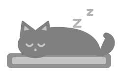
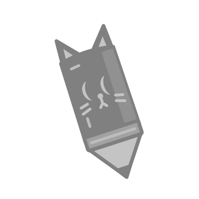

Efeitos gato-livro
Passe o mouse e use Tab para ver os efeitos de foco. Com “reduzir movimento” ativo no sistema, as animações param.
1. Divisor com patinha — .divisor-patas
2. Card com patinha — .efeito-patinha
3. Link ondulado — .link-ondulado
Veja o catálogo completo de livros.
4. Gatinho espiando — .espia
Prontas para retirada
Nenhuma reserva aguardando.
Nenhuma reserva aguardando.
5. Marcador de página — .marca-pagina
Livro do mês
Um enfeite no canto do card.
Um enfeite no canto do card.
6. Carregando — .carregando
Carregando…
7. Fundo de patinhas — .fundo-patas
Área vazia (login, estado vazio).
8. Estado vazio + enfeites — .balanca

A biblioteca ainda está vazia
Cadastre o primeiro livro.
